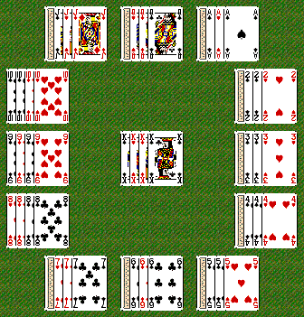

| Number of Decks | 1 |
| Tableau | Deal cards in a clock shape, for a total of twelve piles with four cards each. |
| Stock | Place last four cards in the stock pile (middle of the tableau) Flip over top card. |
To have all four cards in each pile be the rank corresponding to the number on a clock face.
Move the top card in the middle to the appropriate pile. The tableau is in the shape of a clock, and so the numbered cards go where they would on an analog clock. Aces go where the one's go, and the Jacks and Queens go where the eleven's and twelve's go respectively. For all the people who've never had an analog watch/clock, this is the pattern:

King's are kept in the middle pile. When a card is moved to a new pile (or made to stay in the same pile, as the case is with the king, the bottom card in the new pile is taken and placed on top of the middle pile face up. This new card is ready for play. To move a card to the appropriate pile, either drag the card over or click on the appropriate receptor pile.
Game is over when there are four kings in the middle. At this point, you've won if goal is achieved. Note that if a card in a pile is in the right place it is okay even if it is upside down.
Each card in the appropriate pile of the clock (not counting kings, as there are no kings on real clocks) scores one point.
Maximum possible score: 48
Find a way to automate this game. There are no decisions ever to be made. If you lose it's not your fault. (Contrariwise, if you win, it's just luck!)